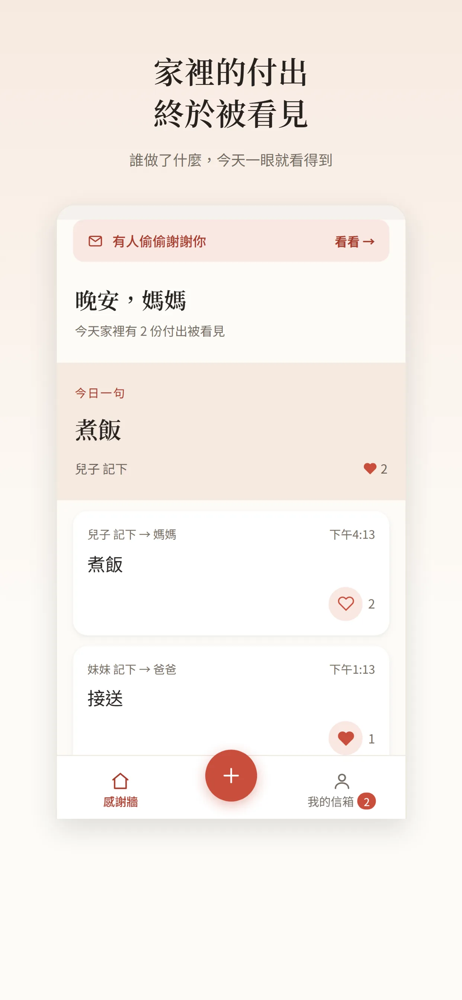
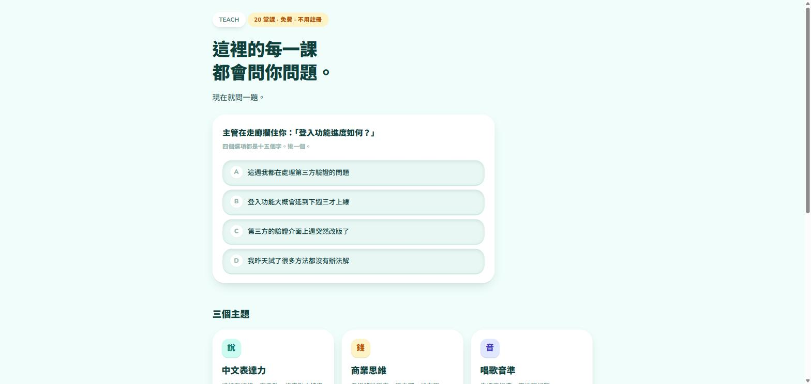
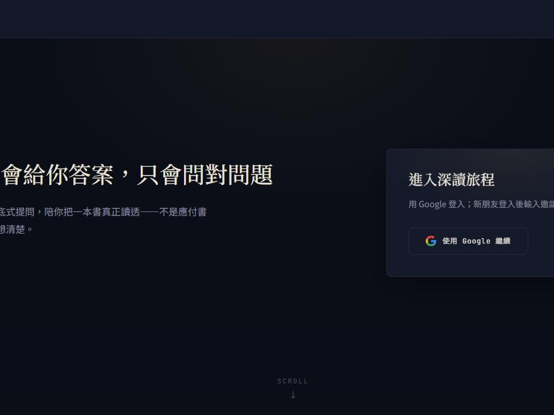

網頁開發、UI設計、平面設計。
目前接案中。想找人把想法做成看得到、用得到的東西，往下看作品，或直接寫信聊聊。
-

Family
React、Vite、Firebase 打造的家庭感謝 PWA，讓家人之間互相留一句感謝的地方。
查看案例 → -

TEACH
20堂互動課程的靜態教學網站，涵蓋表達、商業思維、唱歌音準。
查看案例 → -

保險客戶分堆工具
幫媽媽做的保險客戶管理工具，深色紙感介面，一個人真的在用的實戰案例。
查看案例 → -

個人資料儀表板
自己在用的進度追蹤工具，倒數、里程碑時間軸、加權分數條、任務清單。畫面為隱私改用示意資料重建。
查看案例 → -

NOEVII
蘇格拉底式提問陪你深讀一本書，六階段流程、成長報告，真實上線、邀請制測試中。
查看案例 → -

AtomSpin
團隊做的化學教學工具，把電子軌域、成鍵、反應配平變成可以轉的 3D 畫面；我負責離線化與雙語 i18n。
查看案例 →